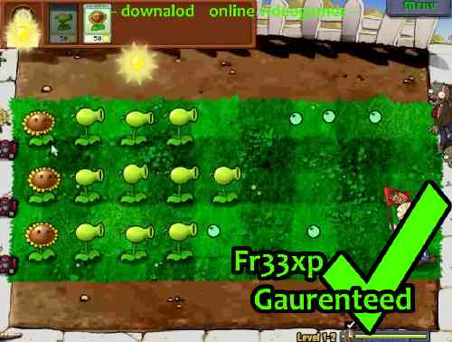
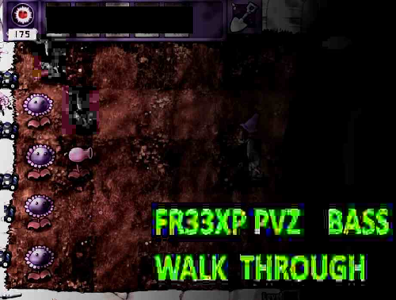

PLANTS VERS U S DOMBIES DOWNLOAD ONLINE
Enjoying the Free Download of the World? Zombies and Plants will Fight again.
Are game are certificated to be 100% clean and Secure, safe for all mindsets of life.
enjoy and download with little Downtime and a Fast worthwhile service.

Plants vs. Zombies is a 2009 defense video game developed and published by PopCap Games.
The game was first released for Windows and Mac OS X, before being brought to consoles,
handheld devices, and mobile devices. Players take on the role of a homeowner in a zombie
apocalypse.